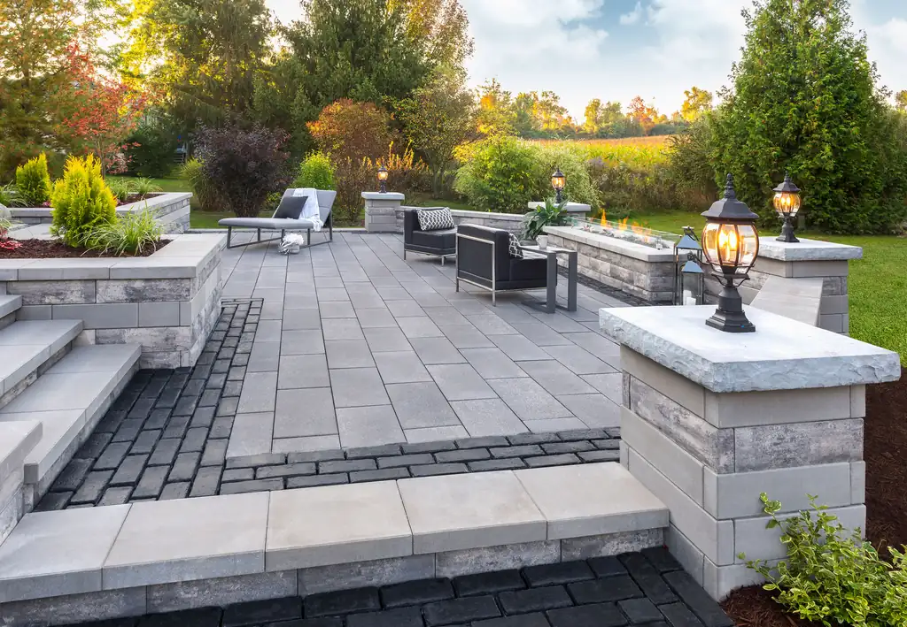
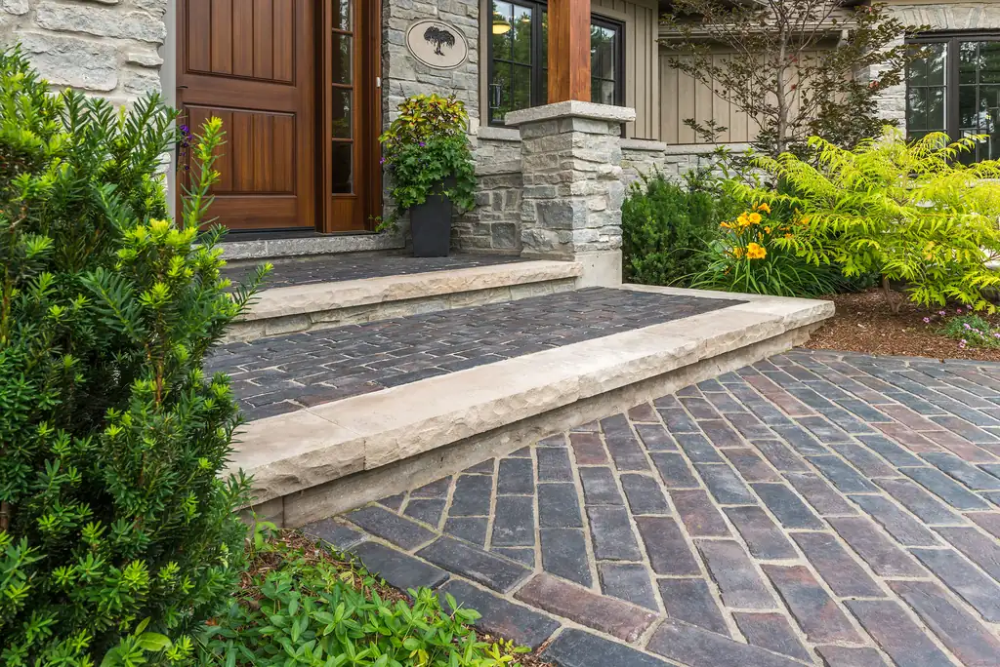
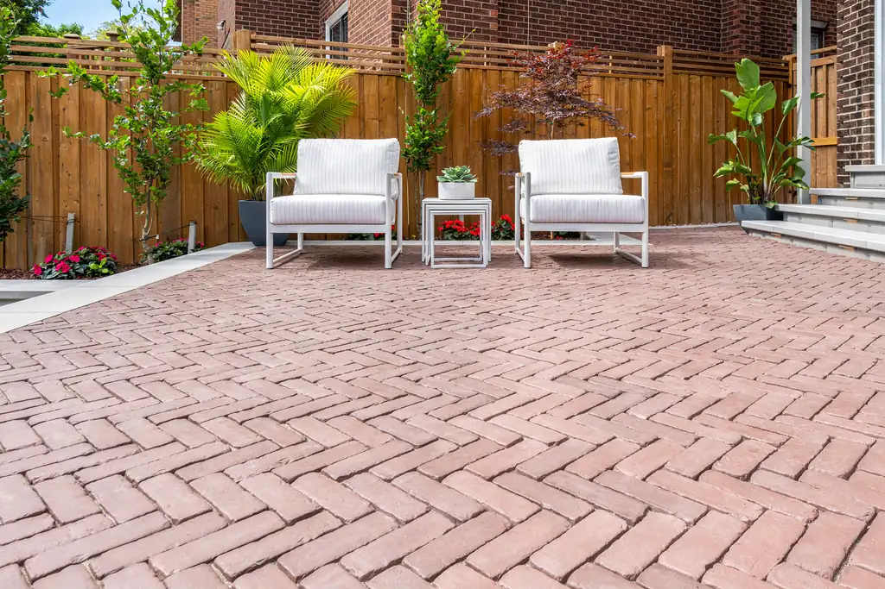
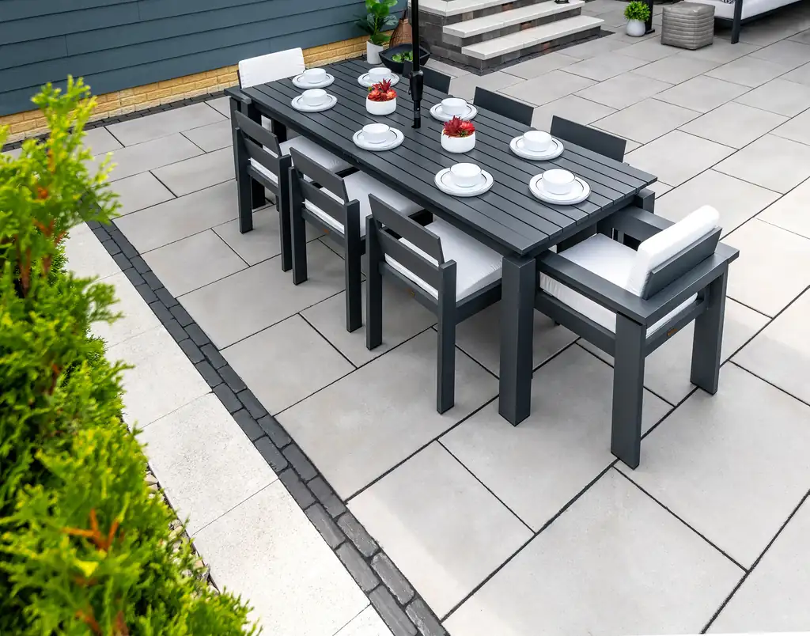
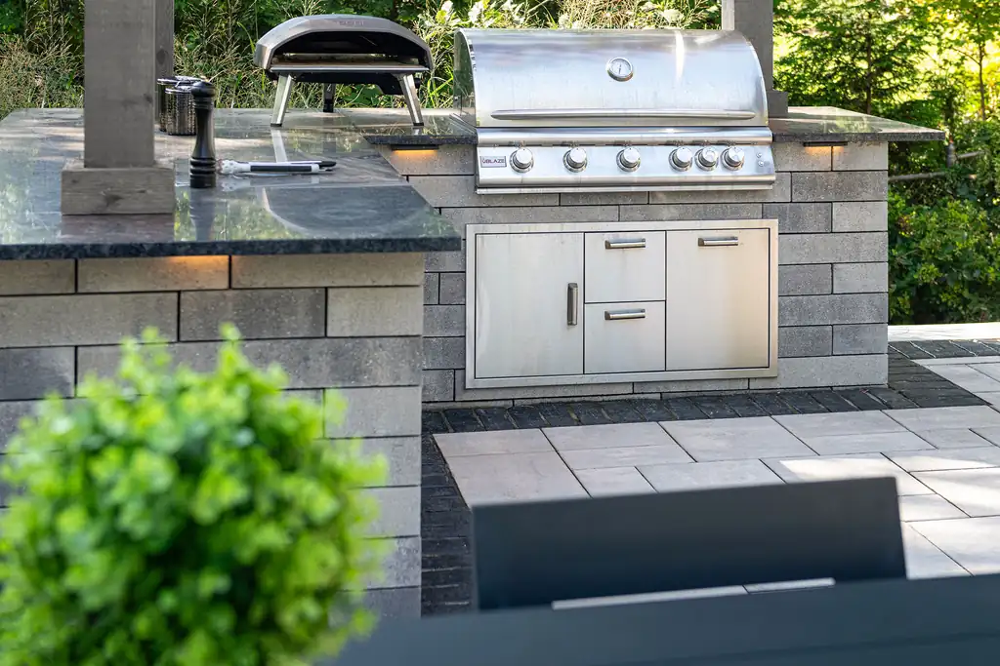
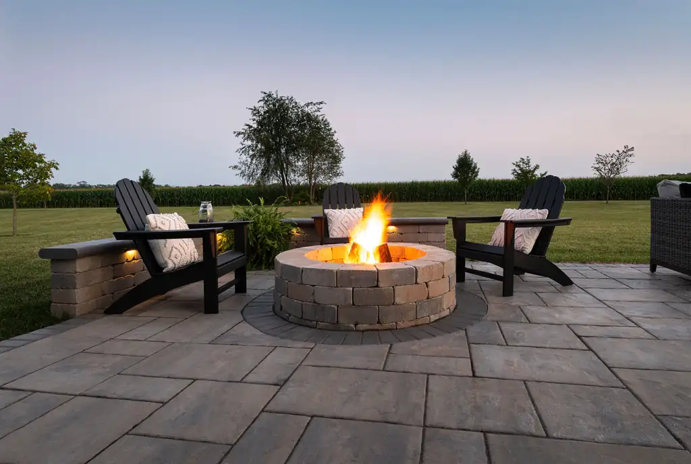
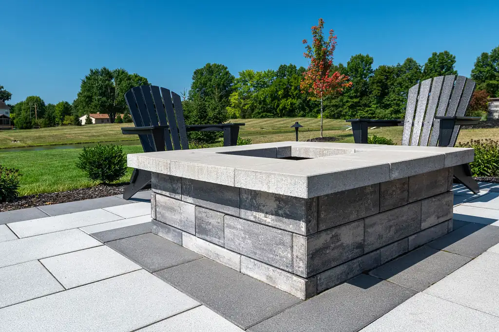
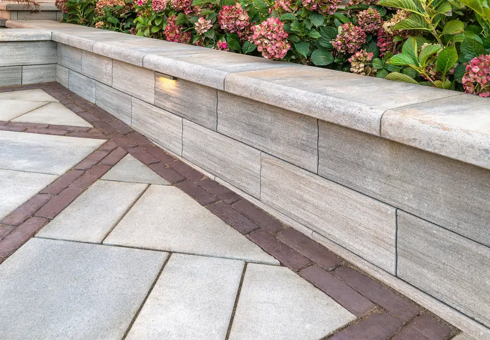
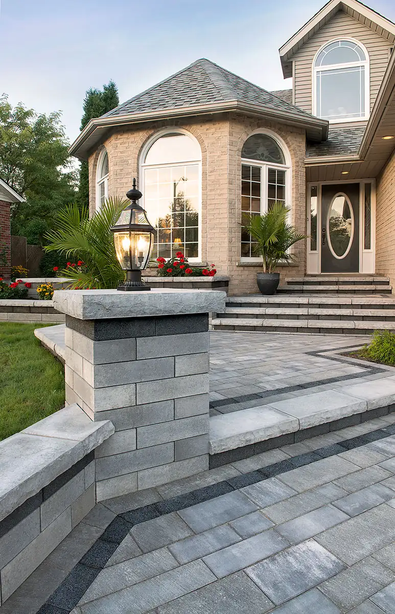

Home · Gallery
Brick, Stone & Paver Project Gallery
See how our premium brick, stone and pavers come together in real spaces throughout the community — from paver walkways and patios to fire features, outdoor kitchens and retaining walls. Tap any photo to view it larger.








Planning Your Project
Gallery Questions
The gallery shows real, finished spaces built with materials like ours: brick and paver patios, walkways and front entries, fire pits and fire tables, outdoor kitchens, natural stone seating walls and retaining walls.
Yes. Bring the photos that speak to you and our team will help you identify the products, colors and quantities needed to recreate the look. Request a free quote or call 574.267.2825.
Most projects combine pavers, natural or manufactured stone, and retaining wall systems. For a full backyard, see our outdoor living materials for patios, fire features and outdoor kitchens.
See Something You Love?
Bring the images that speak to you and our team will help you identify the products and plan needed to recreate the look.